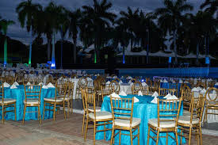
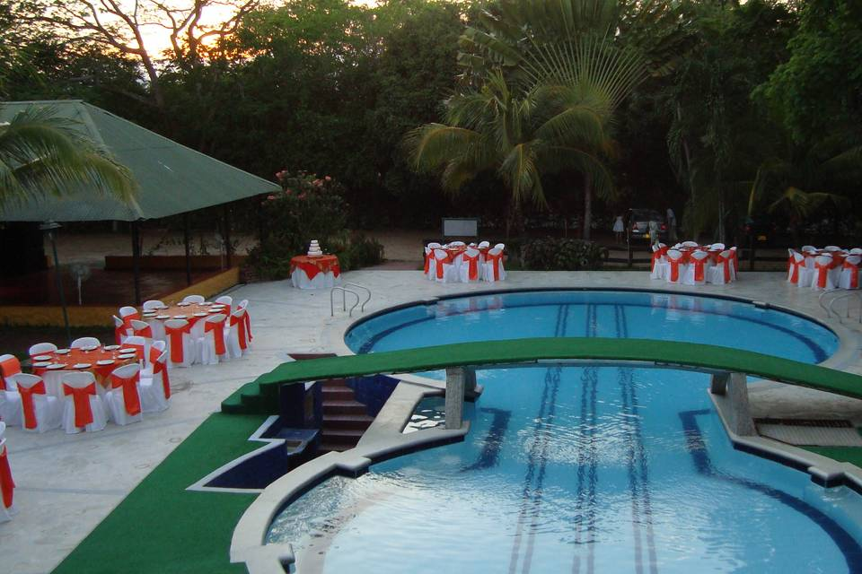
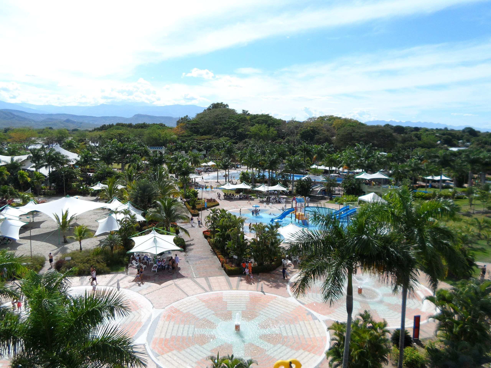
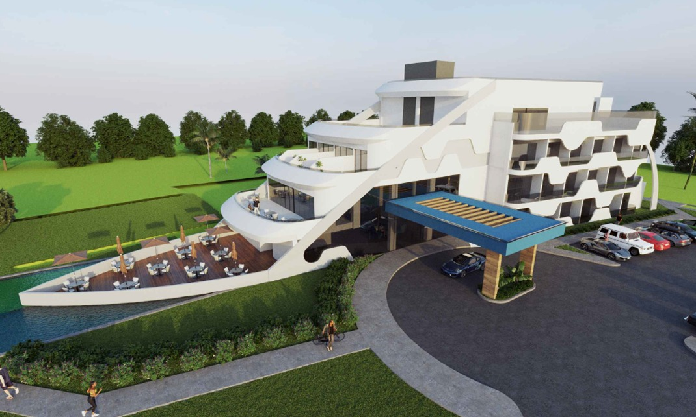
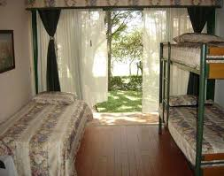

Un paraíso tropical con playas vírgenes y aguas cristalinas en el Pacífico colombiano
Explorar ahoraPlaya Juncal es uno de los destinos más paradisíacos de Colombia por sus playas vírgenes y su entorno natural. Allí se encuentra una hermosa playa rodeada de selva, parte del Parque Nacional Natural Gorgona, que ofrece aguas cristalinas y biodiversidad marina. Además de su belleza costera, el entorno de Playa Juncal cautiva con manglares, ríos y fauna exótica que invitan al ecoturismo y a la aventura acuática. Visitar Playa Juncal es adentrarse en un viaje donde se entrelazan la serenidad del océano, la belleza de la naturaleza y la calidez de su gente, convirtiéndolo en un lugar imperdible para quienes buscan una experiencia de relax y aventura marina única.




